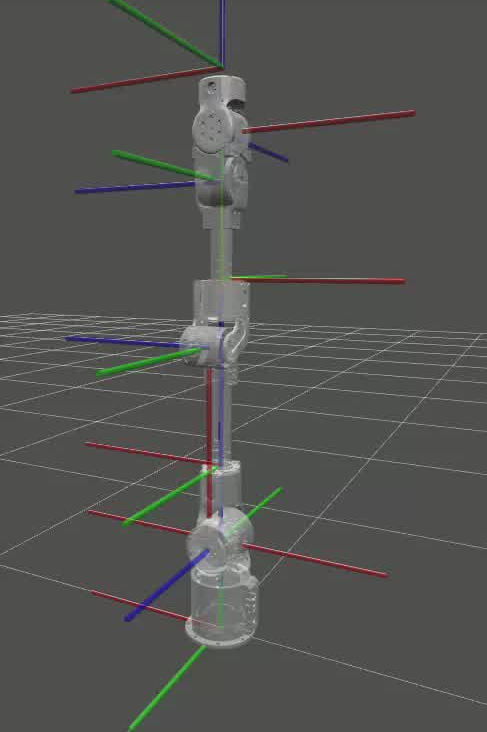
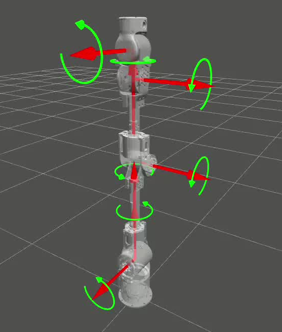
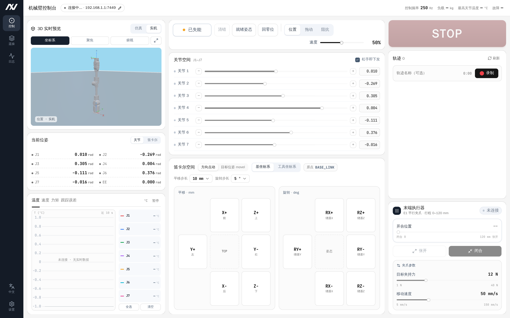

NEXFORM ROBOTICS
LITEARM SE
修订记录
V1.0.4
2026-10-16
删除「机械臂安装以及使用指南」整章，安装步骤改为指向《LITEARM-SE 机械臂安装教程》；更新常见问题
V1.0.3
2026-10-16
控制系统改为板载控制板，上位机经 USB 直连；更新电气接口与连接说明
V1.0.2
2026-09-03
添加安装说明/电气接口说明
V1.0.1
2026-08-01
新建 LITEARM SE 产品手册框架
前言
LITEARM SE 是 NEXFORM ROBOTICS 面向科研教育、AI 机器人开发与轻量级工业自动化场景设计的 7 自由度协作机械臂，采用模块化关节架构，工作半径约 650 mm。机械臂由一块板载控制板 统一驱动：控制板运行固件，承担轨迹规划、正逆运动学、动力学与关节控制律；控制板与机械臂本体之间为 CAN 总线（板内总线，用户无需接线或配置），上位机与控制板之间只用一根 USB 线 直连。PC 侧软件（Python / C++ SDK、ROS 2、URDF、PyBullet/MuJoCo 仿真等）只负责下发命令与读取状态，可用于装配、分拣、抓取、示教与算法验证等场景。
硬件组成
标准交付套件的组成如下（最终以销售配置清单为准）：
1
机械臂本体
LITEARM SE，7 关节
2
控制板
板载控制器，随臂交付
3
USB 线
控制板 ↔︎ 上位机 PC
4
机械臂电源输出
机械臂供电引出线
5
600 W 开关电源套件
选配
6
桌面固定套件
选配
7
立柱套件
选配
8
电动夹爪
选配
9
3D 相机
选配
单位说明
本文档及 SDK 中使用的物理量单位约定如下：
X / Y / Z
m
位置，米
R / P / Y
rad
姿态，弧度
Joint（关节角）
rad
弧度
vTCP
m/s
末端线速度
aTCP
m/s²
末端加速度
vJoint
rad/s
关节速度
aJoint
rad/s²
关节加速度
质量 / 负载
kg
千克
扭矩
N·m
牛米
电压 / 功耗
VDC / W
伏特 / 瓦特
位姿格式约定 ：位姿用 6 个数 表示，前 3 个为位置 x, y, z（m），后 3 个为姿态 rx, ry, rz（rad，绕基坐标系 X/Y/Z 轴的旋转，即 RPY 角），例如 (0.30, 0.0, 0.40, 3.1416, 0.0, 0.0)。Python SDK 中 list 与 tuple 均可（详见《LITEARM SE 软件开发手册》）。
安全须知
简介
本节介绍使用 LITEARM SE 机器人及系统时需要遵守的安全原则与规范。在安装、使用前，使用者必须认真阅读本手册，带有警示标志的内容需要掌握并严格遵守。机器人系统运行中存在夹持、碰撞、坠落等潜在危险，使用人员应充分认识操作风险，并经过培训后使用 SDK 或控制软件。
安全警示标志
本手册其他章节的安全提示使用如下警示标志，警示标志图样如图1所示（图样以产品随附标识为准）：
危险 ：用于可能导致人员伤亡或设备严重损坏的危险情况。警告 ：用于如不避免，可导致人员伤亡或设备严重损坏的危险情况。高温 ：用于存在高温部件、接触可能造成灼烫伤害或设备损坏的危险情况。注意 ：用于如不避免，可能导致人员伤害或设备损坏的一般警示。
安全注意事项
首次启动机器人或机器人系统前需理解并遵循以下基本信息。
机器人操作注意事项
务必按照本手册要求规范安装机械臂本体、控制板与电气设备。
首次使用前由专业人员对机械臂及防护系统进行初步检查，测试全部安全功能（急停、软限位、使能状态）。
使用前检查设备完整性与安装牢固程度，确认符合所在地区安全生产规章。
确保机械臂有足够大的运动空间，运动范围内无人员、障碍物与易卷入线缆。
使用 SDK / 上位机开发调试前需仔细阅读文档，确保输入参数（目标关节角、速度、负载等）正确。
失能（disable()）或异常下电后，关节不再主动输出力矩，机械臂可能在重力作用下坠落。 进行相关操作前请先让机械臂回到安全姿态，或进入零重力模式由人手托扶，避免高处坠落造成人员伤亡或设备损坏。运行期间发生意外或异常，应立即按下硬件急停并切断电源，再排查问题。
机械臂的斜率限制、关节软限位、非法值拒绝、通信看门狗与急停兜底均由控制板固件承担，不依赖上位机是否在线 ；但固件只做硬性兜底，非授权人员切勿通过 SDK 随意修改参数（关节限位、PD 增益、负载质量与质心、重力方向等），部分参数修改后需重新进行安全评估。
人员安全
使用人员应仔细阅读产品手册，掌握安全、规范的操作流程及报错处理方式。
设备运转中，即使机械臂看起来已经停止，也可能处于等待指令状态，应视为仍在动作中。
明确机械臂及末端执行器（夹爪、灵巧手等）的动作范围，设置安全工作区。
定期检查机械臂，防止固定螺栓或末端工具松动。
拖拽示教（零重力模式）时，注意机械臂自重与运动惯性，避免突然失力造成伤害；双手离开后机械臂应能保持当前姿态，如不能保持请勿继续操作。
责任及规范
机器人可与其他设备组成完整系统，本文档不包含完整系统的全部设计、安装与操作内容。完整系统安装的安全性取决于集成方式，使用者需依据所在国家/地区法律法规与安全规范，对完整系统进行设计与安装风险评估，并采取相应防护措施。
开始使用本机械臂即视为已阅读、理解并接受本手册及安全信息全部条款。使用者承诺对自身行为及后果负责，仅将机械臂用于正当目的。对违反使用要求或不可抗力导致的人身伤害、事故、财产损失等，我司不承担相应责任。使用者需履行但不限于：对完整系统做风险评估、编制操作规程、建立安全措施、确认系统设计安装无误、不擅自修改安全措施。
风险评估
风险评估应考虑正常使用及可预见的误操作下人员与机器人之间所有潜在接触，例如：
使用尖锐末端执行器或工具连接器的危险；
处理有毒或其他有害物质的危险；
手指被机械臂底座或关节夹住的危险；
被机械臂碰撞的危险；
末端工具固定不到位、负载超出范围导致坠落的危险；
机械臂负载与坚固表面之间冲击的危险。
使用者须通过风险评估判断相关危险是否构成不可接受的风险并采取相应措施。机械臂不适合无专业人员指导且不具备完全民事行为能力的人士使用。
技术规格
通用规格
产品名称
LITEARM SE 7 自由度协作机械臂
安装方式
正装 / 侧装 / 倒装
自由度
7
有效负载/最大负载
3 kg / 5 kg
自重
5.6 kg
重复定位精度
±0.1 mm
工作半径
650 mm
供电电压
DC 24 V
额定功率
430 W
速度倍率
0.6 ~ 1.0
电源适配
600 W（带泄放）
控制方式
板载控制板（随臂交付）
通讯方式
USB（上位机 PC ↔︎ 控制板）+ CAN（控制板 ↔︎ 关节，板内总线，用户不接线、不配置）
材质
金属 + 高强度工程塑料复合机身
控制板规格
名称
控制板（随臂交付）
作用
承担轨迹规划、运动学、动力学与控制律，并管理急停、软限位等安全兜底
固件版本
出厂固件版本串形如 Litearm1.5.0-7J（Litearm + 三段版本号 + -7J，7J 表示七轴），SDK 要求 Litearm1.5.0 及以上
供电输入
DC 24 V（XT60 接口）
上位机接口
USB（虚拟串口）
关节接口
接机械臂下方接口
参数存储
板载存储，出厂已完成逐台动力学标定
关节参数
为保证运行安全，机械臂关节角度限位带有软件软限位，固化在控制板固件中 ，运动时由固件实时校验。可通过 SDK 逐关节查询与配置（修改前需安全评估）：
for jp in arm.params.all_joint_params(): # 逐关节读回 print (jp.idx, jp.q_min, jp.q_max) # 也可单轴读：arm.params.get_joint_param(0) 0 , - 2.8 , 2.8 ) # 逐关节写：只允许收窄
params.set_joint_limits() 只允许把限位收窄 ，写回当前值会被判为放宽请求并拒绝，写入后需 save_params() 才持久化（写 Flash，不可逆）。下表为出厂标称范围，实际生效值请以 SDK 读回的为准：
Joint1
q[0]
基座旋转
−2.809547 ~ 2.809547
−161° ~ 161°
180°/s
Joint2
q[1]
肩部俯仰
−1.727547 ~ 1.727547
−99° ~ 99°
180°/s
Joint3
q[2]
肘部俯仰
−2.809547 ~ 2.809547
−161° ~ 161°
180°/s
Joint4
q[3]
腕部旋转
−3.071547 ~ 0.017547
−176° ~ +1°
225°/s
Joint5
q[4]
腕部俯仰
−2.809547 ~ 2.809547
−161° ~ 161°
225°/s
Joint6
q[5]
腕部偏转
−1.553547 ~ 1.553547
−89° ~ 89°
225°/s
Joint7
q[6]
末端旋转
−1.553547 ~ 1.553547
−89° ~ 89°
225°/s
说明 1. 关节速度：URDF 中默认速度上限为 1 rad/s，仅为仿真参考值，不代表最大能力。 2. Joint4 区间：软限位为不对称区间（−176° ~ +1°）。 3. 关节最大扭矩：肩部最大约 97 N·m；其余关节扭矩上限以固件逐关节参数 tau_max 为准（SDK arm.params.get_joint_param(idx).value.tau_max 读回），URDF 中 effort 参考值为 Joint1/2=30、Joint3/4=9、Joint5/6/7=3.5 N·m。
图示
机械臂零位与坐标系
机械臂默认安装（台面安装、基座水平）时，基坐标系以基座安装面中心为原点，Z 轴竖直向上（与默认重力方向相反），X/Y 轴按右手定则位于安装面内；工具坐标系（TCP）位于末端法兰处，基坐标系与工具坐标系的标注如图2所示。实际朝向请以 URDF/仿真（base_link 与 ee_frame_link）或实机为准。

零位与坐标系标注图
安装方向（正装 / 侧装 / 倒装）通过重力补偿参数体现，可经 SDK set_gravity_vector(g) 指定重力方向、set_gravity_scale(gs) 逐关节缩放重力前馈；配置错误会直接导致重力补偿失准。
关节旋转方向
各关节绕其 URDF 定义的旋转轴、按右手定则 确定正方向，各关节旋转方向标注如图3所示。可在 PyBullet / MuJoCo 仿真中或上位机实时控制下验证各关节旋转方向。

关节旋转方向标注图
常见问题
Q&A
问：机械臂有哪些控制/运行模式？ 答：LITEARM SE 支持关节空间运动（movej）、笛卡尔直线/圆弧/多路点运动（move_l/move_c/move_path）、笛卡尔点到点（move_p）、回零（home）、零重力拖动示教（zero_g）等（详见开发手册）。运动前确认机械臂处于使能且非急停状态。
问：关节空间和笛卡尔空间有什么区别？ 答：关节空间直接控制每个关节角度，简单直接、不易出现奇异点，适合点到点运动；笛卡尔空间控制末端位姿，适合需要直线/圆弧等精确轨迹的任务，规划更复杂且可能遇到奇异点。
问：上电后/复位后机械臂无法运动？ 答：请依次检查：机械臂是否处于急停或故障状态、是否已使能。按安全流程依次执行 reset()、clear_faults()、enable() 后再运动；若 enable() 被拒，请读取 get_state() 中的故障轴信息（详见开发手册）。
问：如何安全地进行拖拽示教？ 答：进入零重力模式（zero_g()）后双手缓慢拖动机械臂到目标姿态；拖动范围不要超过关节软限位；停止拖动后确认机械臂能保持姿态；示教完成后退出零重力模式并让机械臂保持/回到安全姿态。
问：为什么 disable() 后机械臂会掉落？ 答：失能后关节不再输出力矩，机械臂会在重力作用下坠落。请在机械臂有支撑、无人员靠近时操作，或先 home() 回到安全姿态。
问：连接不上机械臂怎么办？ 答：依次检查：USB 线是否接在控制板与上位机之间；lsusb 中是否存在 VID:PID 为 1d50:606f 的设备（没有则查线缆与供电）；Linux 下当前用户是否已加入 dialout 组；串口是否被另一个进程占用；固件版本是否达到 Litearm1.5.0。仍无法解决请联系技术支持。
问：技术支持渠道？ 答：NEXFORM ROBOTICS 技术团队；GitHub 组织 github.com/nexform-tech （Issues）。
参考文档与技术支持
本手册覆盖产品外观、技术规格与安全须知。机械装配与电气连接已单独成册 ，请配合阅读：
SDK、上位机软件（LiteArm Studio）与其它相关文档的下载地址：https://github.com/nexform-tech
文档结束 如有疑问或需要补充信息，请联系 NEXFORM ROBOTICS 技术团队。
NEXFORM ROBOTICS
LITEARM SE
修订记录
V1.0.4
2026-10-16
控制架构改为板载控制板 + USB 直连，按 litearm-python 重写 SDK 章节；精简上位机章节
V1.0.3
2026-09-03
更新上位机说明
V1.0.2
2026-08-20
更新 SDK 说明
V1.0.1
2026-07-15
新建 LITEARM SE 软件开发手册框架
前言
SDK、上位机软件与配套文档均托管在 GitHub：
本手册只讲软件。机械装配与电气连接不在本手册范围内，请从上面的安装教程获取。
硬件组成
从软件开发视角，使用 LITEARM SE 需要以下硬件/组件：
机械臂本体
LITEARM SE，7 关节
经配套线缆接至控制板
控制板
板载控制器，随臂交付，运行固件
承担轨迹规划、正逆运动学、动力学与控制律；上位机经 USB 直连
上位机 PC
运行 Python / C++ / ROS 2 / 仿真
只需一个可用 USB 口，无需 CAN 硬件、无需配置网络
电源模块
600 W（带泄放），选配
输出经 XT60 接至控制板（接线步骤见《LITEARM-SE 机械臂安装教程》）
末端设备（可选）
夹爪等
由对应产品的 SDK 驱动
控制链路：客户端程序 → USB（虚拟串口）→ 控制板固件 → CAN（板内）→ 关节。规划与控制全部在控制板固件中完成 ，PC 侧 SDK 只负责编解码帧、下发命令与判到位。每个 Arm 会话独占一个串口，因此同一台机械臂同一时刻只能有一个进程持有它。
单位说明
与 SDK / 产品手册一致：位置单位为 m、姿态与关节角单位为 rad、速度 1.0 表示归一化速度（关节运动时由固件按内部规划比例解释，详见「位姿、单位与运动学」一节），质量 kg、力/扭矩 N / N·m。
位姿使用 6 个数 ：pose = (x, y, z, rx, ry, rz)，前 3 个为位置（m），后 3 个为姿态（rad，绕基坐标系 X/Y/Z 轴的 RPY 角）。list 与 tuple 均可，例如 (0.30, 0.0, 0.40, 3.1416, 0.0, 0.0)。SDK 也兼容「位置 3 个数 + 3×3 旋转矩阵」的写法，详见「位姿、单位与运动学」一节。
安全须知
简介
二次开发时除硬件安全外，还需注意软件侧安全语义。开发/调试人员应经过培训，理解关节空间与笛卡尔空间的运动差异、使能/失能与急停语义，以及软限位与碰撞检测的作用。安全细节以《LITEARM SE 产品手册》第 1.3 节为准。
安全警示标志
本手册及配套产品手册使用如下四类安全警示标志（图样以产品随附标识为准）：
危险 ：用于可能导致人员伤亡或设备严重损坏的危险情况。
警告 ：用于如不避免，可导致人员伤亡或设备严重损坏的危险情况。
高温 ：用于存在高温部件、接触可能造成灼烫伤害或设备损坏的危险情况。
注意 ：用于如不避免，可能导致人员伤害或设备损坏的一般警示。
安全注意事项（软件侧）
disable() 会使电机关力，机械臂在重力作用下坠落enable() 可使能并保持当前姿态。运动前确保急停可立即触达、工作区清空；首次运动用保守速度（如 speed=0.1~0.2）。
home() 与零重力拖动（zero_g()）具有特殊安全语义：home() 须先 enable()，且固件把其速度写死为 0.10；zero_g() 退出前必须把各关节推回软限位以内（越限锁存一旦生效不受使能门控、reset() 也清不掉）。修改 params.set_joint_limits() / set_payload() / set_gravity_vector() / set_gravity_scale() / params.set_joint_param() 等参数前应做安全评估；不正确的负载质量/质心或重力方向会导致补偿错误甚至失控。
高频直接控制（send_mit / send_mit_all / move_js / joint_follow）绕过固件规划，属高级功能，仅由具备控制与安全经验的工程人员使用，且必须 ≥10 Hz 自行保活 。
下列命令会覆盖或抹掉该台设备的动力学标定且不可逆 ，不得在已标定的机械臂上执行：save_params()、model.commit()、params.reset_factory()、model.revert()。
固件承担斜率限制、软限位、非法值拒绝、通信看门狗与急停兜底，不依赖上位机在线 ；但这只是硬性兜底，不能替代上层程序自身的参数校验。
仿真通过不等于实机安全；迁移到实机仍需低速、低负载逐步验证。
责任及规范
用户对二次开发形成的完整系统的安全负责，进行风险评估与防护设计；对违反使用要求或不可抗力造成的损害，我司不承担相应责任。详见产品手册 1.3.4。
风险评估
参照产品手册 1.3.5，软件触发类风险（如远端指令导致机械臂高速运动、负载坠落）也应纳入风险评估。
SDK 使用指南
简介
LITEARM SE 软件侧采用 “客户端 SDK / 上层框架 → USB → 控制板固件 → CAN → 关节” 的分层架构。轨迹规划、正逆运动学、动力学与控制律全部在控制板固件中完成 ，PC 侧 SDK 只负责编解码帧、下发命令与判断是否到位。Python、C++ 客户端接口语义一致；ROS 2 与仿真适配均基于同一套控制链路。
应用层
用户 Python/C++ 程序、ROS 2 节点、LeRobot 策略
业务逻辑、算法、轨迹或策略
SDK / 适配层
litearm-python / litearm-cpp
状态读取、运动控制、参数管理
固件层
控制板固件
规划、运动学、动力学、控制律与安全兜底
硬件层
控制板 + CAN + LITEARM SE 关节
关节执行与状态反馈
连接约定
上位机与控制板之间只用一根 USB 线 ：USB CDC 虚拟串口，VID:PID 1d50:606f，波特率 921600。无需配置 IP 或网络 。
端口可不指定——Arm(port=None) 会按 VID:PID 自动发现控制板；也可显式传入，如 Arm(port="/dev/ttyACM0")。SDK 不读取任何环境变量 。
一次会话独占串口，同一台机械臂同一时刻只能被一个进程持有（详见「连接与最小示例」一节）。
本文以 Python SDK（litearm-python） 为主线；C++、ROS 2 与仿真生态见「其他语言与软件生态概述」一节。
库相关依赖
Python
litearm-python
Python ≥ 3.9；唯一依赖 pyserial >= 3.4；无需 CAN 硬件
主线
C++
litearm-cpp
C++17、CMake ≥ 3.14；无第三方依赖（标准库 + 平台串口 API）
提供
ROS 2
litearm-ros2 / litearm-ros2-control
ROS 2 Humble；ros2_control 版经 litearm-cpp 直接驱动
提供
URDF/RViz
litearm-description
标准 URDF 描述包，供 RViz / MoveIt 2 / 仿真共用
提供
MoveIt 2
litearm-moveit2
ROS 2 Humble + MoveIt 2
提供
MuJoCo
litearm-mujoco
pip 安装；MujocoArm 仿真接口
提供
PyBullet
litearm-pybullet
pip 安装；PyBulletArm 接口与 litearm-python 对齐
提供
Isaac Sim
litearm-isaacsim
NVIDIA Isaac Sim 仿真环境
提供
LeRobot
litearm-lerobot
litearm-python；lerobot 数据集录制与策略适配
提供
上位机
litearm-studio
Python 3.10+；图形化控制台
提供
控制板固件版本需为 Litearm1.5.0 及以上。版本串形如 Litearm1.5.0-7J——Litearm + 三段版本号 + -7J（七轴）或 -1J（单轴台架）。版本过低或串不符合该命名约定时，connect() 会直接拒绝。
Python 库安装与使用（主线）
安装
git clone https://github.com/nexform-tech/litearm-python.gitcd litearm-pythonpip install -e . # 安装（正式交付建议锁定版本）python3 -c "import litearm; print(litearm.__version__)" # 验证安装后同时提供命令行入口 litearm-python（等价写法 python -m litearm，见「只读属性与命令行」一节）。
依赖与运行环境
Python：≥ 3.9 。
依赖：pyserial >= 3.4（唯一依赖）
驱动/权限：Linux 下需把当前用户加入串口权限组，重新登录后生效：
sudo usermod -aG dialout $USER
支持 Windows / Linux / macOS。
连接与最小示例（先跑只读）
import litearm as pawith pa.Arm().connect () as arm: # 不指定端口则按 VID:PID 自动发现控制板 print (arm.firmware, arm.n) # 固件版本串、关节数 = arm.get_state().value # 读值要走 .value，见「读值」一节 print (state.q, state.dq, state.tau) # 关节角 / 速度 / 力矩 print (arm.get_tcp().value) # 当前末端位姿（6 个数） 要点：
Arm().connect() 是唯一入口connect() 返回时握手已完成，arm.n / arm.firmware 一定可用。Arm 支持上下文管理器（with），退出自动 close()；也可手动连接后调用 arm.close()。每个会话背后有一条后台读线程，用完必须关闭 。手动指定端口（多台设备或自动发现失败时）：pa.Arm(port="/dev/ttyACM0").connect()。
读值：Msg 信封与 RobotState
11 个「读一帧」接口返回信封 Msg，数据本身在 .value 里 ——直接打印 Msg 看到的是信封，不是状态。
@dataclass (frozen= True )class Msg(Generic[T]):# 原始返回值（取不到帧时是 None） float # 这类帧在本会话的平均到达频率 float # 最近一帧的本地时刻（从未收到为 0.0） print (arm.get_state()) # Msg(value=RobotState(...), hz=100.2, timestamp=...) print (arm.get_state().value.q) # [0.0, 0.0, 0.0, 0.0, 0.0, 0.0, 0.0]
get_state() 消费控制板持续推送的状态帧（约 100 Hz），无往返开销。get_status_now() 会主动发一条查询 ，可用于确认链路活性；本会话还没收到过任何帧时它抛 MotionTimeoutError。hz == 0.0 且 timestamp == 0.0 表示这类帧从没到过
RobotState 主要字段与派生属性：
mode / mode_name当前模式及其名称
flags / flag_names标志位与名字
seq状态帧到达序号，用来判断数据流是否还在动
jointslist[JointState]，每项含 q / dq / tau / t_mos / t_coil / err
joint_fault逐轴掉线位图
n / enabled / cart_busy关节数 / 是否使能 / 笛卡尔运动是否在进行
q / dq / tau各关节角（rad）、角速度（rad/s）、力矩（N·m）
fault_axes / faulted / fault_detail故障轴与故障详情
运动控制（关节 / 笛卡尔）
import litearm as pawith pa.Arm().connect () as arm:# 运动之前必须先使能 # 关节空间：q 为 7 元素关节角（rad），固件规划 S 曲线并自己走完 0.0 , 0.0 , 0.0 , 0.0 , 0.0 , 0.0 , 0.0 ], speed= 0.2 )0.3 , 0.0 , 0.0 , 0.0 , 0.0 , 0.0 , 0.0 ], speed= 0.2 ) # 各轴一起到位 # 笛卡尔直线：位姿 = 6 个数（位置 3 + RPY 3） = (0.30 , 0.0 , 0.40 , 3.1416 , 0.0 , 0.0 )= (0.32 , 0.0 , 0.42 , 3.1416 , 0.0 , 0.0 )= (0.34 , 0.0 , 0.44 , 3.1416 , 0.0 , 0.0 )= 0.5 ) # 直线 = 0.5 ) # 依次过路点（尖角） # 圆弧（起点必须是实测 TCP） # 回零
movej(q, speed=1.0)关节空间单发，固件规划 S 曲线并走完，到位后静止保持。不校验关节限位 ，越限目标会被固件截断后走满行程
movej_sync(q, speed=1.0)关节空间同步点到点，各轴一起到位
home(*, timeout=None)回零。须先 enable() ；固件把速度写死为 0.10，不接受 speed 参数（写 arm.home(speed=0.3) 会抛 TypeError）
move_js(q, dq=None, tau_ff=None)低层关节流，绕过规划；需调用方 ≥10 Hz 重发（见「透传与伺服」一节）
move_p(pose, speed=1.0, pos_tol=0.006, rpy_tol=0.03)关节空间插值的点到点，末端不走直线 ；只收单个位姿
move_l(pose, speed=1.0, wait=True)笛卡尔直线（位置线性 + 姿态球面插值）
move_c(pose_start, pose_via, pose_goal, speed=1.0, wait=True)圆弧（三点定圆，via 的姿态被忽略）；start 必须与调用时的实测 TCP 一致
move_path(poses, speed=1.0, wait=True)依次经过多个路点，转角是尖角 （无倒角）
poll_cart()查询笛卡尔进度的待认领队列（配合 wait=False）
set_speed(percent)全局、持续 的调速器。percent 是 0..100 的整数百分比 ——set_speed(1) 是 1% 速度，不是“满速”
movej / movej_sync / move_p / home 返回 RobotState；move_l / move_c / move_path 返回 CartPlan。speed 取 0~1 归一化比例（set_speed 除外）。笛卡尔规划被拒时抛 CartesianPlanError，整条拒绝、机械臂一步没动 。
movej 返回 ≠ 停稳
位姿、单位与运动学
位姿格式 ：pose = (x, y, z, rx, ry, rz)，前 3 个为位置（m），后 3 个为姿态（rad，绕基坐标系 X/Y/Z 轴的 RPY 角）。list 与 tuple 均可。注意不是欧拉角以外的旋转矩阵形式，也不是四元数 。SDK 也兼容「位置 3 个数 + 3×3 旋转矩阵」的写法：
0.30 , 0.0 , 0.35 ], [[1 , 0 , 0 ], [0 , 1 , 0 ], [0 , 0 , 1 ]]))
逆运动学 ：ik(pose, q_seed=None, timeout=3.0) -> list[float]，失败抛 IKError。它可能返回另一个同样有效的分支，与 q_seed 差得远未必是错误。
= arm.ik((0.30 , 0.0 , 0.35 , 3.1416 , 0.0 , 0.0 ))
没有 fk(q) ：PC 侧不带运动学模型（正运动学只有固件能做）。读取当前末端位姿请用 get_tcp()。
生命安全与状态控制
使能
enable(attempts=12)使能全部关节并保持当前姿态；重试只对固件白名单里可重试的码生效
失能
disable()切断位置环，机械臂不再被托住，会在重力作用下下落
急停
emergency_stop()单帧、单向、不读状态，唯一没有前置条件的入口
复位
reset()清故障 + 重锚控制环（不是 MCU 重启 ，同一对象仍可用）
清故障
clear_faults()只清 RAM 故障位，不写 Flash
模式
set_motion_mode(mode) / park()固件只认 0，其它值本地抛 InvalidCommandError；park() 等价于 set_motion_mode(0)
零重力
zero_g()上下文管理器，重力补偿下自由拖动（拖拽示教），见「拖动示教（零重力）」一节
参数配置与前馈调参
负载
set_payload(mass, com=(0.0, 0.0, 0.0))末端负载质量（kg）与质心；补偿正确性依赖此参数 ，换负载必须重设
重力方向
set_gravity_vector(g)基座安装方向（正装/侧装/倒装）通过重力方向体现
重力前馈
set_gravity_scale(gs) / set_inertia_scale(isc)逐关节缩放重力/惯量前馈，长度须等于关节数
前馈开关
set_ff_mask(mask) / get_ff_mask() / ff_preset(preset)preset：0 全关 / 1 出厂 / 2 全开
前馈向量/标量
set_ff_vec(item, values) / set_ff_scalar(item, sub, value) / get_ff_vec(item) / get_ff_scalar(item, sub=0)读写动力学/控制律参数（item / sub 语义以固件参数表为准）
关节参数
arm.params.set_joint_param(idx, kp, kd, tau_max) / get_joint_param(idx) / all_joint_params()逐关节 kp / kd / 扭矩上限；修改前安全评估
关节限位
arm.params.set_joint_limits(idx, q_min, q_max)软限位；只允许收窄 ，写回当前值会被判为放宽请求并拒绝
以上写入的都是 RAM，需要掉电保持时调用 save_params() 写 Flash（不可逆 ）。
拖动示教（零重力）
# 进入前必须已使能 with arm.zero_g():input ("拖动机械臂，然后回车" )
zero_g() 是上下文管理器（由 zero_g_start() + zero_g_stop() 组合而成），进入后固件用虚拟弹簧与阻尼让机械臂“变软”，可徒手拖动示教。保活由 SDK 后台线程按 period（默认 0.04 s，须在 [0.005, 0.10) 内）自动重发，调用方不用管。
保活期间其它动作 命令会被拒（急停、失能例外；查询类不受限）。
退出前必须把各关节推回软限位以内 ：零重力会跳过位置越限锁存，而一旦退出，锁存立刻生效且不受使能门控、reset() 也清不掉。退出是异步的，zero_g_stop() 返回后固件侧还要一点时间收尾；只读属性 zero_g_active / zero_g_error 可查状态。
透传与伺服
绕过固件规划，直接以 MIT 参数逐帧驱动关节——调用方必须自己保活，≥10 Hz 重发 ，否则 0.1 s 看门狗进入 fail-soft（降刚度 + 力矩归零），机械臂会在重力下缓慢塌下去。
send_mit(idx, q, dq, kp, kd, tau)单关节 MIT 五参数逐帧直接控制
send_mit_all(q, dq, kp, kd, tau)全关节；五个数组长度都必须等于关节数，且必须是有限数
joint_follow(q, dq, kp, kd)帧里不带前馈的 send_mit_all，前馈由固件每拍自己算，跟随环因此省掉一次往返
move_js(q, dq=None, tau_ff=None)低层关节流；dq 是速度参考，不是速率上限
本组入口在真机上未经完整验证，请谨慎使用。任何其它运动/停止命令都会结束当前透传会话。
关节参数、动力学模型、数据采集与固件自检
四个子命名空间对象，均为 arm. 下的属性：
arm.paramsset_joint_param(idx, kp, kd, tau_max)、set_joint_limits(idx, q_min, q_max)、get_joint_param(idx)、all_joint_params()、reset_factory()关节级参数（kp / kd / 扭矩上限 / 软限位）
arm.modelprobe()、get_body(idx)、set_body(idx, vals)、get_gravity(q)、status()、commit(expected_mask)、revert()动力学模型的在线导入与回滚
arm.logstart(n_ticks)、stop()、reader()、capture(n_ticks)、dump(path)300 Hz 控制拍采集（LOG_MAX_SAMPLES = 2400，约 8 s 记满自停）
arm.diagkin_bench()固件自检与 CAN 链路诊断计数
for jp in arm.params.all_joint_params():print (jp.idx, jp.kp, jp.q_min, jp.q_max)300 ) # 录 300 拍后自停 = arm.log.reader()for s in r.samples()[:3 ]:print (s.tick, s.q_ref, s.dq, s.tau)
arm.params.set_joint_limits() 只允许收窄 ，不幂等，不要拿它做读写回环。arm.model.set_jm()（改关节映射）建议永不调用——改错有乱飞风险，且本机唯一的恢复手段本身也不可逆。
授权、固件升级与参数持久化
license(timeout=1.0)读取授权记录（返回裸 LicenseInfo，不是 Msg）
activate(*, cust_id, issued, flags=0, mac, timeout=2.0)提交厂商签发的凭据；须先 disable()
enter_dfu(timeout=0.3)免探针进入 ROM bootloader，用于刷写固件；唯一的终端态操作
save_params()把当前 RAM 参数写入 Flash，不可逆
设备出厂即锁定，未激活的机械臂 enable() 会被拒 （其余命令照常，以便现场诊断），激活记录写一次、永不擦除 。
enter_dfu() 后本 Arm 对象不可再用（所有入口抛 ArmIsInDfuError，close() 例外）；设备会重新枚举为 0483:DF11，需等待 USB 重新枚举后再刷写，刷完新建一个 Arm。
只读属性与命令行
print (arm.n, arm.firmware, arm.fw_version) # 关节数 / 版本串 / 版本元组 print (arm.q_tol, arm.dq_tol, arm.move_timeout) # 到位判据与运动超时 print (arm.zero_g_active, arm.last_reset_reason)命令行入口 litearm-python（等价写法 python -m litearm）：
litearm-python status # 只读litearm-python fw # 版本串 + 轴数litearm-python tcp # 当前位姿 + 帧率litearm-python movej -0.1 0 0 0 0 0 0 --speed 0.3litearm-python home
status / fw / tcp 只读，其余会真的驱动机械臂。movej 的目标个数必须正好等于 arm.n。
核心 API 速查
连接
Arm(port=None)、connect()、close()、disconnect()、reconnect()
状态
get_state()、get_status_now()、get_tcp()
运动学
ik(pose, q_seed=None)（无 fk()）
运动
movej()、movej_sync()、home()、move_p()、move_l()、move_c()、move_path()、poll_cart()、set_speed()
安全
enable()、disable()、emergency_stop()、reset()、clear_faults()、set_motion_mode()、park()
拖动示教
zero_g()、zero_g_start()、zero_g_stop()
透传
move_js()、send_mit()、send_mit_all()、joint_follow()
前馈 / 动力学
ff_preset()、set_ff_mask()、get_ff_mask()、set/get_ff_vec()、set/get_ff_scalar()、set_gravity_vector()、set_gravity_scale()、set_inertia_scale()、set_payload()
关节参数
arm.params.*
动力学模型
arm.model.*
数据采集
arm.log.*
固件自检
arm.diag.kin_bench()
授权 / 固件
license()、activate()、enter_dfu()、save_params()
异常与错误处理
全部异常继承自 LiteArmError。固件明确回绝的命令抛 CommandRejectedError，并带 .cmd / .code 两个字段。
from litearm import (try :0.0 ]* 7 , speed= 0.5 )except MotorFaultError as e:print ("motor fault:" , e) # 状态帧出现 FAULT 或 EMERGENCY # 清故障 + 重锚控制环 except IKError as e:print ("ik failed:" , e) # 反解失败 / 目标不可达 except CartesianPlanError as e:print ("cartesian plan failed:" , e) # 固件规划被拒（无解/共线/超容量） except CommandRejectedError as e:print ("rejected:" , e.cmd, e.code) # 固件回 ERR{cmd, code}
except InvalidCommandError 不覆盖 CartesianPlanError：后者直挂 LiteArmError，因为它表达的是固件规划结论，而不是命令被拒绝。错误码里 code == 0x00 恒表示固件没有这条命令（UnsupportedByFirmwareError）。
其他语言与软件生态概述
LITEARM SE 的控制通路只有一条：上位机经 USB 直连控制板 。所有官方 SDK 都是这条通路的不同语言封装，规划、正逆运动学与动力学一律在控制板固件里完成，上位机只负责下发目标、读回状态并判到位。
C++ SDK（litearm-cpp）
litearm-python 2.1.0 的 C++ 移植：同一套线上协议、同一套语义与安全判据，逐行对应。
编译器
C++17（g++ 7+ / clang 6+ / MSVC 2019+）
构建
CMake ≥ 3.14
第三方依赖
无 ——只依赖 C++ 标准库与平台自带串口 API（POSIX termios / Win32）
固件
Litearm1.5.0 或更新
连接
USB CDC 串口，VID:PID 1d50:606f 自动发现
#include <litearm/litearm.hpp> int main() {// 不传端口：按 VID:PID 1d50:606f 自动发现 connect ();0.0 , 0.0 , 0.0 , 0.0 , 0.0 , 0.0 , 0.0 }, 0.2 );return 0 ;命名空间为 litearm，类为 litearm::Arm，头文件位于 include/litearm/，构建产物是单个静态库 liblitearm.a。
ROS 2
两个互斥 入口，都与控制板直连、都没有守护进程，也都经 litearm-cpp 打开串口：
litearm-ros2-controlros2_control 的 SystemInterface 插件，由 joint_trajectory_controller 或 MoveIt 2 驱动，用于运动控制
litearm-ros2独立维护驱动节点（生命周期节点 + 55 个服务），用于控制回路之外的开机验收、授权与参数调试
两者绝不可同时运行 ：它们打开的是同一个 USB CDC 串口，SDK 会对其加独占 flock，第二个进程直接打不开。
litearm-description 提供各型号的 URDF 描述（SE 在 SE/litearm_description/），litearm-moveit2 提供 MoveIt 2 配置包 litearm_moveit_config。详细的启动步骤见下一节。
仿真与具身生态
litearm-pybullet与 litearm-python 1:1 对齐 ：同样的 31 个方法名、参数与默认值，同样返回 Msg / RobotState / CartPlan，位姿同样是 6 个数
litearm-mujoco用法与 litearm-python 一致，但目前仍按旧接口编写：用 movel / get_tcp_pose() 与「位置 3 个数 + 3×3 旋转矩阵」位姿，尚未迁移到新接口
litearm-isaacsim三节点单向同步：API 命令发布 → 真机执行 → Isaac Sim 跟随真机实测 关节角，因此任何方式产生的运动（含拖拽示教）仿真都会跟上
litearm-lerobotLeRobot 的 Robot 适配器：观测 observation.state 为 7 个绝对关节角、动作 action 为 7 个关节目标，可录制 LeRobotDataset
from litearm_pybullet import PyBulletArmwith PyBulletArm(render= True ) as arm: # connect() 隐含 0.0 , 0.6 , 0.0 , - 1.2 , 0.0 , 0.7 , 0.0 ], speed= 0.2 )= arm.get_tcp().value # 6 个数，不是旋转矩阵 - 0.1 , r, p, yw], speed= 0.1 )参考仓库
Python SDK
https://github.com/nexform-tech/litearm-python
C++ SDK
https://github.com/nexform-tech/litearm-cpp
ROS 2 控制栈
https://github.com/nexform-tech/litearm-ros2-control
ROS 2 维护驱动
https://github.com/nexform-tech/litearm-ros2
URDF 描述
https://github.com/nexform-tech/litearm-description
MoveIt 2
https://github.com/nexform-tech/litearm-moveit2
上位机软件
https://github.com/nexform-tech/litearm-studio
安装教程
https://github.com/nexform-tech/litearm-setup
MuJoCo
https://github.com/nexform-tech/litearm-mujoco
PyBullet
https://github.com/nexform-tech/litearm-pybullet
Isaac Sim
https://github.com/nexform-tech/litearm-isaacsim
LeRobot
https://github.com/nexform-tech/litearm-lerobot
ROS 2 环境的使用
ROS 2 侧不经过任何 Python 桥接进程 ：ros2_control 插件自己持有机械臂的 USB CDC 链路，走 litearm-cpp，read() 取 SDK 缓存好的状态帧，write() 用固件的 MOVE_JS 伺服把指令参考发回。规划、正逆运动学与动力学仍留在固件里。
环境与准备
ROS 2
Humble
构建
ament_cmake，C++17
SDK
litearm-cpp——已安装，或作为同级源码树
固件
Litearm1.5.0 或更新
连接
USB CDC 串口，VID:PID 1d50:606f
串口权限
Linux 下 sudo usermod -aG dialout $USER，重新登录后生效
低于 1.5.0 的固件会在连接阶段被拒绝：控制栈依赖 1.5.0 才引入的状态帧布局、joint_fault 字段与使能位。
工作区布局如下（同一工作区只保留一份机械臂描述）：
~/litearm_ws/src/
├── litearm-cpp/ # C++ SDK
├── litearm-description/ # URDF 描述（包名 litearm_description）
└── litearm-ros2-control/ # ros2_control 插件source /opt/ros/humble/setup.bashcd ~/litearm_wscolcon buildsource install/setup.bashlsusb | grep 1d50 # 应看到 1d50:606fls /dev/ttyACM* # 应看到 /dev/ttyACM0启动控制栈
ros2 launch litearm_ros2_control litearm_control.launch.py
port''USB CDC 路径。留空按 1d50:606f 自动发现；接多块板时写 port:=/dev/ttyACM1
clear_faultstrue配置时清一次锁存故障，使「故障之后」仍然是一条命令；false 让锁存故障拦住启动
start_joint_state_broadcastertrue拉起并激活 joint_state_broadcaster
start_joint_trajectory_controllertrue拉起并激活 joint_trajectory_controller
ros_domain_id42本栈的 ROS 域，刻意避开 0
ros_localhost_onlytrue只在本机发现，避免同网段第二台机械臂出现在 RViz 里
栈起来之后，机械臂就是一个普通的 ros2_control 系统：给 arm_controller（一个 joint_trajectory_controller）发轨迹，或者在 MoveIt 2 里规划、由 move_group 执行。关节名是 joint1..joint7。
控制栈 + MoveIt 2 + RViz2 （一条命令，内部包含上面那条）：
ros2 launch litearm_moveit_config litearm_moveit.launch.pyros2 launch litearm_moveit_config litearm_moveit.launch.py use_rviz:=false # 无显示环境ros2 launch litearm_moveit_config litearm_moveit.launch.py start_control:=false # 只补 move_group两条 launch 都把域钉在 42 并开启仅本机发现，因此从另一个终端观察前要先导出同样的变量：
export ROS_DOMAIN_ID= 42; export ROS_LOCALHOST_ONLY= 1ros2 node list接口映射
每个关节导出三个状态接口和两个命令接口：
command
positionq_ref（经 MOVE_JS 下发）
command
velocitydq_ref
state
position实测 q
state
velocity实测 dq
state
effort实测 tau——电流估算值，噪声大，不可用于控制
export_diagnostic_interfaces 为 true（默认）时，每个关节还会额外导出四个诊断状态接口：
temperature_mosMOSFET 温度
temperature_coil线圈温度
error_code固件故障字
feedback_age最近一帧状态帧的年龄（s）
指令看门狗 ：固件在 100 ms 收不到指令后跳闸，所以 write() 必须持续重发；controller manager 的更新率只要不低于 100 Hz 就自动满足。但控制循环活跃时，不要让更新循环卡顿超过约 100 ms——超时后固件退回失效软保持，机械臂会朝负载拉拽的方向垂下去。
另外要清楚在进程内直接驱动机械臂的取舍：write() 会进到 SDK 写一帧并等固件 ACK，上限是 SDK 自己的 1.2 s 超时。链路健康时这是亚毫秒级，USB 链路卡住时则可能把控制循环堵到那个上限。本插件不提供硬实时保证。
维护驱动与 RViz 显示
需要在不带 controller_manager 的情况下做开机验收、授权与参数调试时，用维护驱动：
ros2 launch litearm_driver litearm_driver.launch.pyros2 service call /litearm/get_status litearm_msgs/srv/GetStatus "{}" ros2 service call /litearm/get_tcp litearm_msgs/srv/GetTcp "{}" 维护驱动自己隔离了参数门禁：allow_motion 未置位时，任何会让电机上电的服务都会被拒绝，坏参数在上线之前 就被挡下。它与上一节的控制栈互斥，一次只能跑一个。
只需查看模型、不接真机时，用 URDF 描述包：
cd ~/litearm_ws/src/litearm-description/SEcolcon build --packages-select litearm_descriptionsource install/setup.bashros2 launch litearm_description display.launch.pyRViz2 会打开并显示该臂，关节状态 GUI 为每个关节提供一根滑条。运动链为 base_link → Link1 … → Link7 → ee_frame_link，网格为 meshes/ 下的 STL。
常见问题与技术支持
Q&A
问：关节空间运动和笛卡尔空间运动有什么区别？ 答：关节空间运动（movej / movej_sync）只关注各关节从当前值过渡到目标值，不保证末端走直线；笛卡尔空间运动关注末端在空间中的轨迹，move_l 保证走直线、move_c 保证走圆弧、move_path 走多路点路径。两者都在控制板固件里规划。
问：关节角数组与位姿数组的元素含义？ 答：关节角 q 为 [J1, J2, …, J7]（rad）。位姿为 6 个数 (x, y, z, rx, ry, rz)：位置单位 m，姿态为绕基坐标系 X/Y/Z 轴的 RPY 角，单位 rad。SDK 也兼容「位置 3 个数 + 3×3 旋转矩阵」的写法。
问：movej 返回成功但机械臂不动？ 答：先读状态确认是否失能或存在锁存故障：arm.get_state().value.enabled / .faulted。未使能时先 enable()；有锁存故障时先 reset()（清故障 + 重锚控制环）再使能。另外 movej 返回只代表指令已被接受——残差约 0.012 rad 在到位容差内即返回，需要精确停稳请自行读状态确认或加稳定延时。
问：连接不上机械臂怎么办？ 答：依次检查：lsusb | grep 1d50 是否出现 1d50:606f（没有则查线缆与供电）；ls /dev/ttyACM* 是否有设备（固件处于 DFU 时设备会枚举成 0483:DF11）；Linux 下当前用户是否已加入 dialout 组；串口是否被另一个进程占用（同一串口同一时刻只能被一个进程持有，可用 fuser -v /dev/ttyACM0 查）；固件版本是否达到 Litearm1.5.0。
问：换了一台电脑/重新插拔后串口号变了？ 答：设备重枚举后可能从 /dev/ttyACM0 变成 /dev/ttyACM1。按 VID:PID 1d50:606f 自动发现（Arm() 不传端口、launch 的 port 留空）可以避开这个问题；需要固定写死时，用 /dev/serial/by-id/ 下的稳定路径而不是 ttyACM 编号。
问：ROS 里看不到 /joint_states？ 答：确认 joint_state_broadcaster 已激活、机械臂不在故障态，并确认观察终端与 launch 处在同一个 ROS 域（ROS_DOMAIN_ID=42、ROS_LOCALHOST_ONLY=1）。
问：能不能同时跑 ros2_control 栈和维护驱动？ 答：不能。两者打开的是同一个 USB CDC 串口，SDK 会对它加独占 flock，第二个进程会直接打开失败。一次只跑一个，切换前先确认旧进程已退出。
问：技术支持渠道？ 答：NEXFORM ROBOTICS 技术团队；GitHub github.com/nexform-tech Issues。
上位机软件 LiteArm Studio
本章为概述。LiteArm Studio 的完整界面说明、操作步骤与排障速查表单独成册，见《LiteArm Studio 操作手册》。
软件简介与运行形态
LiteArm Studio 是面向 LITEARM 七自由度（J1–J7）协作机械臂的图形化上位机控制台。它不再依赖任何后台服务主机 ：UI 是浏览器页面，由本机一个 Python 守护进程（litearm-studio-daemon）提供，守护进程是唯一 接触硬件的进程。
浏览器窗口（React UI）
│ HTTP → 静态资源、/api/health
│ WS → 状态下行 / 指令上行
▼
litearm-studio-daemon（Python，仅监听回环地址）
▼
litearm-python ──USB CDC（1d50:606f）──> 控制板 ──CAN（板内）──> 关节
守护进程独占机械臂 ：自动发现 USB CDC 设备（或用 --port 指定），以 50 Hz 从 SDK 缓存的帧里推送归一化状态，所有 SDK 调用都在单线程执行器上串行化。急停与失能走独立通道 ：两者在运动进行中依然可达，不会被正在执行的运动堵住。守护进程同时托管 UI ：它提供构建好的前端资源，并以 Chromium --app= 窗口打开（回退为普通标签页）。关闭窗口不会 结束机械臂会话。只监听回环地址 ：绑定其它地址会在代码层被拒绝——把一个能驱动机械臂的界面暴露到局域网上被当作事故处理，而不是一个可选设置。
启动方式
cd litearm-studiopip install -e ../litearm-pythonpip install -e "daemon[test]" # 安装 fastapi/uvicorn 与 litearm-studio-daemon 入口pnpm install && pnpm build # 构建守护进程将要托管的 UIlitearm-studio-daemon --fake # 离线：全程跑在 SDK 的假传输上，不需要硬件# litearm-studio-daemon # 真机：自动发现 USB CDC 设备 # litearm-studio-daemon --port /dev/ttyACM1 --http-port 9000 --no-open 控制台会打印它实际绑定的地址（默认 http://127.0.0.1:8765/，被占用时自动递增）并打开窗口。
每个 release 还附带 Windows / Linux 的单文件可执行程序（litearm-studio-<版本>-<平台>）及对应的 .sha256。它们已把守护进程、litearm SDK 与构建好的 UI 打包在内，目标机器不需要 Python、不需要 pnpm、也不需要检出仓库 ：
./litearm-studio-0.5.0-linux-amd64 --fake # 离线，不需要硬件./litearm-studio-0.5.0-linux-amd64 # 真机，自动发现 USB功能范围
单臂运动控制
基于 URDF 的实时 3D 数字孪生（含坐标系辅助线）；J1–J7 关节滑条（范围取自固件软限位）与批量下发；基坐标系 / 工具坐标系下的笛卡尔点动，以及到目标位姿的直线运动；就绪姿态、固件回零、零重力拖动示教、使能 / 失能、清错；运动过程中依然可达的高优先级 STOP 急停
遥测
10 Hz 关节采样（角度、速度、力矩、温度、驱动器错误码）；浏览器端 IndexedDB 会话录制，配额可在 10–500 MB 之间配置，支持 CSV 导出
国际化
英文 / 简体中文

LiteArm Studio 主界面（单臂控制台总览）
本版本尚未包含 ：轨迹示教录制 / 回放、控制服务日志页面、夹爪与灵巧手面板、逐关节阻抗或保持模式。设置与校定页面（负载、增益、限位、自检）目前也还没有接到守护进程上——守护进程侧的对应命令已经存在，只是没有界面入口。
实机安全操作与开发建议
任何实机使能、运动控制或参数下发前，须确认机械臂工作半径内无人员驻留、无障碍物干涉 ；使能 / 失能、Home / Zero 的安全语义见产品手册的相关章节。
失能瞬间电机释放锁止力矩，机械臂可能因重力下坠 ，失能前务必扶稳机械臂或使其处于低位安全姿态。守护进程与 SDK 打开的是同一个 USB CDC 串口，SDK 会对其加独占 flock：上位机运行时，其它进程（SDK 脚本、ROS 2 栈、维护驱动）都打不开这个串口 ，反之亦然。请勿由上位机与 SDK 同时竞争同一台机械臂。
需要程序化、可复现的自动化运行时，建议直接采用 SDK（第 2 章）；上位机适合人工监控、示教与演示。
附录一 机器人状态与报错
状态字段（RobotState）
arm.get_state() 返回 Msg 信封，载荷是 RobotState：
mode / mode_name控制器运行模式码与名称（如 INIT 等）
flags / flag_names配置位图与已解码的名称列表（使能、笛卡尔运动进行中、故障等）
seq状态帧序号；连续两帧 seq 不变说明读路径卡住
jointsJointState 列表，逐轴字段见下表
joint_fault固件单关节故障降级位图（Litearm1.5.0 起上报，旧布局恒 0）
派生属性（不必自己算）：
n关节数（机械臂 7、台架 1）
enabled是否已使能
cart_busy是否正在执行笛卡尔运动
q / dq / tau各关节位置 / 速度 / 力矩的数组视图
fault_axes故障轴号列表
faulted是否处于故障态
fault_detail故障的可读描述
drop_hold_inferred是否推断 存在掉线刚性持位锁存
JointState 逐轴字段：q（位置 rad）、dq（速度 rad/s）、tau（力矩 N·m）、t_mos（MOSFET 温度 ℃）、t_coil（线圈温度 ℃）、err（该轴驱动器故障码）。
一个常见陷阱 ：drop_hold 锁存读不到 ——状态帧里没有这一位，只能靠推断。SDK 唯一能确证它存在的时刻，是带该门禁的运动命令回 ERR{cmd, 0x06} 时（见下节）。
Python 异常类型
全部继承自 litearm.errors.LiteArmError，可从顶层包直接导入：
LiteArmError全部 SDK 运行时错误的基类
NotConnectedError未连接或串口未打开时调用
ForkedSessionError在 fork() 出的子进程 里使用父进程建立的会话（继承自 NotConnectedError）
TransportError串口读写或帧 CRC 校验失败
FirmwareMismatchError固件版本不符合约定（应为 Litearm + 三段版本号 + -7J / -1J）或低于最低版本
InvalidCommandError参数 / 命令非法（长度不对、取值越界等），在上线之前 就抛出
MotorFaultError状态帧出现 FAULT，或进入 EMERGENCY（含单关节故障降级）
MotionTimeoutError运动超时未到位
IKError逆解失败 / 目标不可达
CommandRejectedError固件显式回 ERR{cmd, code}；带 .cmd / .code 字段
UnsupportedByFirmwareError固件没有实现 这条命令（code == 0x00；继承自 CommandRejectedError）
CartesianPlanError固件规划被拒：IK 无解 / 三点共线 / 超容量 / 越限位——臂一步没动
MotionSupersededError这条笛卡尔请求被新请求取代——预期内的接管，不是失败
CartReplyLostError笛卡尔应答丢失，结局未知 ：臂可能动了也可能没动，只能回读状态判定，不可当失败重发
ArmIsInDfuError本 Arm 已把设备交棒进 ROM bootloader，会话进入终态 ，不可再用
TeleopLockedError / TeleopBusyError遥操作相关的占用 / 锁定错误
两条容易踩的继承关系：
except InvalidCommandError 不覆盖 CartesianPlanErrorLiteArmError——它表达的是固件对这条轨迹的规划结论，而不是「命令被拒绝」，硬套会凭空多出语义错误的 .cmd / .code。不要用 except CartesianPlanError 顺带抓 MotionSupersededError 。抢占是正常用法（新目标来了就接管旧的），混进通用异常会让正常抢占走成故障分支、触发本不该有的错误恢复。
错误处理建议
首次联调从只读接口开始：arm.get_state() 确认 enabled / faulted / fault_detail 与关节数正常，再谈使能与运动。
先分清楚谁拒绝的 ：读不到设备看 TransportError；版本不符看 FirmwareMismatchError；固件明确回绝看 CommandRejectedError（读 .cmd 与 .code，以回显的命令码为准 ，不要拿“我刚发了哪条”去推断，异步路径的 ERR 与它对应的命令不在同一次收发里）。
出现锁存故障时：先确认周围安全 → 必要时人工托扶机械臂 → reset()（清故障 + 重锚控制环）→ enable()。
笛卡尔请求失败：先区分四种结局——CartesianPlanError（这条轨迹不成立，臂没动）、MotionSupersededError（被接管，正常）、CartReplyLostError（结局未知，回读判定，不可重发 ）、MotionTimeoutError（发下去了但没按时到位）。
透传高频率下发出现看门狗接管：确认发送帧率不低于 10 Hz，检查 send_mit_all 的五个数组长度是否都等于关节数。
子进程里报 ForkedSessionError：不要试图沿用父进程的会话，在子进程里新建一个 Arm 。
附录二 机械臂连接
串口与设备信息
连接方式
USB CDC 虚拟串口
上位机与控制板之间的一根 USB 线
VID:PID
1d50:606fSDK 与 ROS 2 插件据此自动发现设备
设备路径
/dev/ttyACM0（Linux）/ COMx（Windows）重枚举后编号可能变化
串口参数
921600 8N1
由 SDK 设定，用户不需要配置
固件要求
Litearm1.5.0 或更新版本串形如 Litearm1.5.0-7J（-7J 七轴 / -1J 单轴台架）
DFU 模式
枚举为 0483:DF11
ROM bootloader，需刷入固件才能回到 CDC
串口权限
Linux 下 sudo usermod -aG dialout $USER
重新登录后生效
除 USB 线外，机械臂侧的供电接线（电源模块 → XT60 → 控制板 → 机械臂下方接口）见《LITEARM-SE 机械臂安装教程》的电气连接章节。用户不接触、也不需要配置板内 CAN 总线 。
建立连接
用 USB 线连接控制板与上位机，接通机械臂电源；
lsusb | grep 1d50 应看到 1d50:606f；ls /dev/ttyACM* 应看到设备节点；Linux 下确认当前用户在 dialout 组（groups | grep dialout）；
运行 SDK 最小示例验证：with pa.Arm().connect() as arm: print(arm.get_state().value.enabled)。
连接排查与多臂
lsusb 看不到 1d50:606f线缆未插好 / 控制板未上电 / 设备处于 DFU（此时枚举为 0483:DF11）
找不到 /dev/ttyACM*
同上；也可能是内核驱动未加载，换一根数据线（有些线只供电不传数据）重试
permission denied 打开串口用户不在 dialout 组，sudo usermod -aG dialout $USER 后重新登录
之前能连，现在打不开
串口被另一个进程占用——同一串口同一时刻只能被一个进程持有（SDK 加独占 flock）。fuser -v /dev/ttyACM0 查占用者，停掉它再试
换了台电脑 / 重新插拔后连不上
设备重枚举后编号可能从 ttyACM0 变成 ttyACM1。不传 port 让 SDK 自动发现即可；必须写死路径时用 /dev/serial/by-id/ 下的稳定名称
FirmwareMismatchError固件低于 Litearm1.5.0，需升级固件
多台机械臂 ：每台机械臂各有自己的控制板与 USB 串口。为每个串口各建一个 Arm 实例即可（Arm(port="/dev/ttyACM0") 与 Arm(port="/dev/ttyACM1")），互不影响。若不想写死编号，可依次用 Arm() 自动发现、或改用 /dev/serial/by-id/ 路径区分。
文档结束 如有疑问或需要补充信息，请联系 NEXFORM ROBOTICS 技术团队。